제강기능사 (2003-03-30 기출문제)
1과목: 임의 구분
1. 금속의 동소변태를 설명한 것 중 옳은 것은?
- 합금을 형성하면서 그 성질이 변화되는 현상이다.
- 자기의 강도가 변화되는 현상이다.
- 크리프의 한도와 이슬점이 변화되는 현상이다.
- 결정격자의 형식이 바뀌는 현상이다.
(정답률: 45%)

2. 핵연료 및 신소재에 해당되는 것은?
- 우라늄, 토륨
- 티탄합금, 저용융점합금
- 합금철, 순철
- 황동, 납땜용합금
(정답률: 77%)
3. 체심입방격자의 표시로 맞는 것은?
- LCC
- BCC
- HCL
- CPC
(정답률: 90%)
4. 금속의 소성변형에 속하지 않는 것은?
- 단조
- 인발
- 압연
- 주조
(정답률: 69%)
5. 재결정 온도가 가장 낮은 금속은?
- W
- Fe
- Cu
- Pb
(정답률: 48%)
6. 온도 t℃, 길이 ℓ인 물체가 t´℃로 가열되었을 경우 길이가 ℓ′로 늘어났을 때 선팽창계수를 하는 식은?
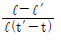
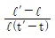
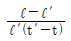
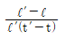
(정답률: 69%)
7. 자기변태가 일어나는 온도는?
- 이슬점
- 상점
- 퀴리점
- 동소점
(정답률: 84%)
8. 합금의 평형상태도는 어떤 요소에 의해서 표시된 선도인가?
- 중량과 시간
- 농도와 온도
- 수축과 중량
- 부피와 질량
(정답률: 65%)
9. 청동의 주 성분은?
- 구리-니켈
- 구리-주석
- 철-납
- 철-알루미늄
(정답률: 95%)
10. 순철(Fe)의 비중으로 맞는 것은?
- 약 7.8
- 약 8.9
- 약 9.7
- 약 10.3
(정답률: 56%)
11. 다음 중 자석강이 아닌 것은?
- KS강
- OP강
- GC강
- MK강
(정답률: 60%)
12. 시멘타이트(Fe3C)를 약 몇도[℃]로 가열하면 빠른 속도로 흑연을 분리시키는가?
- 1154
- 1021
- 768
- 210
(정답률: 37%)
13. 톰백은 어느 것에 속하는가?
- 콘스탄탄
- 황동
- 인코넬
- 합금강
(정답률: 88%)
14. 면심입방격자이며 용융점이 약 660℃인 원소는?
- Fe
- Aℓ
- W
- Sn
(정답률: 61%)
15. 상온에서 고체가 아닌 것은?
- Au
- Ag
- Hg
- Ti
(정답률: 89%)
16. 물체의 구조 및 기능을 설명하기 위한 도면은?
- 상세도
- 계획도
- 설명도
- 견적도
(정답률: 92%)
17. 기어 제도에서 피치원을 나타내는 선은?
- 굵은 실선
- 가는 1점 쇄선
- 가는 2점 쇄선
- 은선
(정답률: 69%)
18. 물체의 보이지 않는 부분을 나타내는 데 사용되는 선은?
- 실선
- 파선
- 일점쇄선
- 이점쇄선
(정답률: 77%)
19. 제도 용지의 종류 중 A4 용지의 크기는?
- 594 × 841
- 420 × 594
- 350 × 450
- 210 × 297
(정답률: 88%)
20. 다음 물체의 투상도에서 평면도로 옳은 것은?
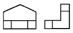
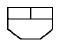
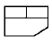
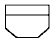
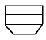
(정답률: 77%)
2과목: 임의 구분
21. 다음 도형은 어느 단면도에 속하는가?
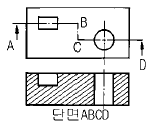
- 온단면도
- 회전 도시 단면도
- 한쪽단면도
- 조합에 의한 단면도
(정답률: 48%)
22. 물체의 수평면이나 수직면의 일부 모양만을 도시해도 충분할 경우에 어떤 투상도로 나타내면 좋은가?
- 요점 투상도
- 부분 투상도
- 회전 투상도
- 복각 투상도
(정답률: 74%)
23. Ø100 ± 0.⑤ 로 표시된 치수의 공차는?
- 0.⑤
- 0.1
- -0.⑤
- 0.01
(정답률: 71%)
24. KS 규격에 의한 표면의 결(거칠기) 도시 기호 중 특별한 표면 가공을 하지 않을 때 사용하는 기호는?
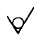
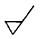
(정답률: 74%)
25. 탄소강 단강품을 나타내는 재료기호는?
- BrC3
- SF
- SM
- SCP
(정답률: 69%)
26. 미터 보통나사를 나타내는 기호는?
- TM
- TP
- M
- P
(정답률: 60%)
27. 다음 그림에서 테이퍼 값은 얼마인가?
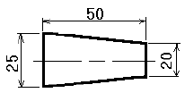
- 1/10
- 1/5
- 2/5
- 1/2
(정답률: 61%)
28. 강재의 유동성을 향상시키는데 가장 효과적인 것은?
- 탄소분
- 모래
- 형석
- 흑연
(정답률: 75%)
29. 용선차(torpedocar)의 특징 중 옳은 것은?
- 온도 강하가 작고 용선을 직접 전로에 장입 한다.
- 작업 인원이 많고 레이들 크레인을 증가 시킨다.
- 출선할 때 출구가 커서 슬랙이 약간 유출 된다.
- 혼선로에 비해 건설비가 비싸고 설비의 대형화에 한계가 없다.
(정답률: 64%)
30. 제강에서 Kalling 법이란?
- 회전로에 의한 탈산법
- 회전로에서 석회에 의한 탈황법
- 회전로에서 Slag 중 P 를 제거
- 회전로에서 Si, Mn 을 산화 제거
(정답률: 45%)
31. 일반 전로의 송풍 풍구 풍함은 LD전로에서는 무엇으로 대치하여 설치되어 있는가?
- 출강구
- 슬랙호울
- 노상
- 산소란스
(정답률: 65%)
32. LD 전로법은 어느 전로법인가?
- 상취전로
- 저취전로
- 횡취전로
- 노상전로
(정답률: 68%)
33. LD 조업에서 소프트 블로우법 중 틀린 것은?
- 탈인이 잘 된다.
- 산소압력을 높인다.
- 가스와 용강간의 거리가 멀다.
- 산소 이용율이 저하된다.
(정답률: 63%)
34. 순산소 상취 전로 제강법에서 스로핑(slopping)이 일어날 때의 대책 중 틀린 것은?
- 취련초기 산소압력의 증가
- 용선을 추가로 대량 첨가
- 취련중기에 형석, 석회석 등의 투입
- 취련중기에 과대한 탈탄속도의 방지
(정답률: 48%)
35. 용선 100Kg 중 Si 함량이 0.5%라 한다. LD전로에서 제강한 결과 Si 전량이 산화 제거 된다면 Si 산화에 필요한 산소량은 약 몇 Kg 인가? (단, Si원자량은 28)
- 0.47
- 0.57
- 0.67
- 0.77
(정답률: 50%)
36. 전기로 제강에서 산화정련의 목적과 관련이 가장 적은 것은?
- Si를 산화제거한다.
- C를 적당한 곳까지 떨어뜨린다.
- P를 제거한다.
- 용강중의 산소를 제거한다
(정답률: 48%)
37. 연속주조 설비 중 턴디시내 노즐의 재질로써 적당치 않은 것은?
- 지르콘
- 산화규소
- 고급 알루미나
- 마그네시아
(정답률: 42%)
38. 아크식 전기로에 속하지 않는 것은?
- 에루식 전기로
- 고주파 유도전기로
- 스태사노식 전기로
- 지로우드식 전기로
(정답률: 32%)
39. 아크식 전기로제강에서 산소사용의 목적이 아닌 것은?
- 용해촉진
- 산화탈탄
- 산화정련
- 박판제조
(정답률: 69%)
40. 용강의 탈가스법이 아닌 것은?
- 흡입탈가스법
- 유적탈가스법
- 순환탈가스법
- 비연소폐가스법
(정답률: 79%)
3과목: 임의 구분
41. 주로 킬드강(Killed Steel)에 사용되는 주형은?
- 상광형
- 하광형
- 원형
- 직각형
(정답률: 46%)
42. 연속주조 용강 처리시 바브링(Bubbling)용 가스로 가장 적합한 것은?
- BFG
- Ar
- COG
- O2
(정답률: 53%)
43. 연속주조법의 특징 중 틀린 것은?
- 균열,분괴의 공정을 생략하여 생산공정을 간단히 한다.
- 생산성을 높인다.
- 빌릿의 재질이 나쁘다.
- 제품의 회수율을 높인다.
(정답률: 84%)
44. 출강구 확인 작업시 안전사항으로 틀린 것은?
- 불티 비산 및 산소 역류에 주의 한다.
- 슬랙 비산에 의한 화상에 유의 한다.
- 블티 비산에 의한 화상에 유의 한다.
- 작업 중 산소 누출시는 즉시 밸브를 개방 한다.
(정답률: 92%)
45. 현장에서 설비점검을 하고자 할 때 가장 올바른 방법은?
- 시간을 절약하기 위해 지름길을 택하여 점검
- 항상 안전통로를 이용하여 점검
- 시간이 없을 때는 뛰어서 점검
- 간단한 수공구는 휴대할 필요 없음
(정답률: 96%)
46. 자동차 운전 중 공장 앞 주차장에서 주차를 할 때 맞는 것은?
- 2선에 주차
- 끝선에 주차
- 주차선안에 주차
- 배기구가 화단측으로 주차
(정답률: 100%)
47. 제강공장의 크레인의 주요 안전장치와 관련이 가장 먼 것은?
- 정치식장치
- 과부하방지장치
- 충돌방지장치
- 비상정지장치
(정답률: 71%)
48. 전기로에 사용되는 흑연전극의 구비조건 중 틀린 것은?
- 고온에서 산화되지 않을 것
- 전기 전도도가 양호할 것
- 화학반응에 안정해야 할 것
- 열팽창 계수가 커야 할 것
(정답률: 69%)
49. 내화재료의 구비조건으로 틀린 것은?
- 열전도율과 팽창율이 높을 것
- 고온에서 기계적 강도가 클 것
- 고온에서 전기적 절연성이 클 것
- 화학적인 분위기하에서 안정된 물질일 것
(정답률: 74%)
50. 연속주조 가스절단장치에 쓰이는 가스가 아닌 것은?
- 산소
- 프로판
- 아세틸렌
- 발생로가스
(정답률: 85%)
51. 출강작업의 관찰시 필히 착용해야 할 안전장비는?
- 방열복, 방호면
- 운동모, 귀마개
- 방한복, 안전벨트
- 면장갑, 운동화
(정답률: 76%)
52. 복합 취련 조업에서 상취 산소와 저취 가스의 역할을 바르게 설명한 것은?
- 상취산소는 환원작용, 저취가스는 냉각 작용을 한다.
- 상취산소는 산화작용, 저취가스는 교반 작용을 한다.
- 상취산소는 냉각작용, 저취가스는 산화 작용을 한다.
- 상취산소는 교반작용, 저취가스는 환원 작용을 한다.
(정답률: 81%)
53. 노외 정련법에 해당되지 않는 방법은?
- Rotor법
- RH법
- DH법
- AOD법
(정답률: 58%)
54. 제선, 제강, 압연 전 분야의 현대 일관제철 기술에 해당되지 않은 것은?
- 대형화 및 고속화
- 고속화 및 연속화
- 자동화 및 컴퓨터화
- 기계화 및 수동화
(정답률: 50%)
55. 산성전로 제강법과 염기성 전로 제강법의 설명이 틀린 것은?
- 전로 내장연와에 의해서 산성, 염기성으로 구분된다.
- 염기성 전로는 [P] 제거가 가능하다.
- LD 전로의 내화재는 돌로마이트 등이 사용된다.
- 염기성 전로는 [S] 제거가 불가능하다.
(정답률: 48%)
56. 연속주조의 주조 설비가 아닌 것은?
- 턴 디시
- 주형이송대차
- 더미바
- 2차 냉각 장치
(정답률: 65%)
57. 제강법에서 주 원료가 아닌 것은?
- 고철
- 냉선
- 용선
- 철광석
(정답률: 69%)
58. L F (ladle furnace) 조업에서 LF 기능과 거리가 먼 것은?
- 용해기능
- 교반기능
- 정련기능
- 가열기능
(정답률: 48%)
59. 연주주편에 발생하는 내부 결함이 아닌 것은?
- 중심 편석
- 중심 수축공
- 대형 개재물
- 방사선 균열
(정답률: 58%)
60. 연주 조업 중 주편표면에 발생하는 블로우홀이나 핀홀의 발생원인이 아닌 것은?
- 탕면의 변동이 심할 때
- 몰드 파우더에 수분이 많을 때
- 윤활유중에 수분이 있을 때
- Aℓ 선 투입 중 탕면유동 시
(정답률: 32%)